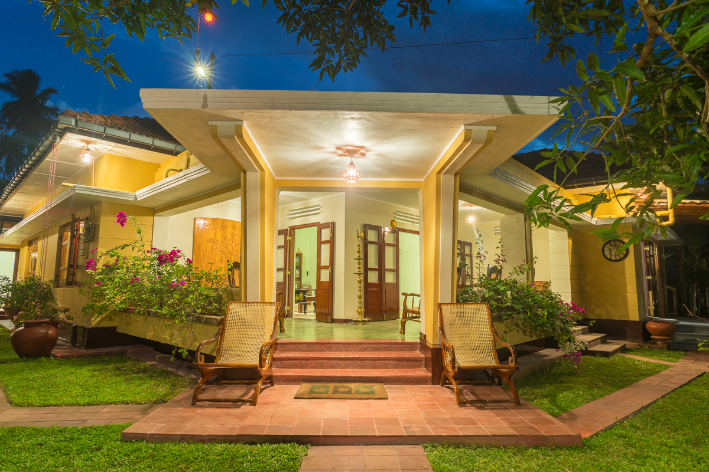
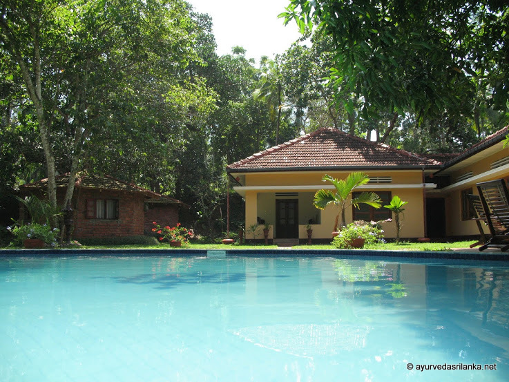

Hello world!
Hello world!
Peacock Ayurveda Garden is an Ayurveda resort in Sri Lanka. The resort is located in the south side of the country, only 4 km away from the town of Dickwella. This small and lovely town, caressed by the waves of the Indian Ocean, is with a coral reef gulf and breathtaking powdery white sand beaches.

With a locally famous Ayurveda doctor who lived in this beautiful country house and used her knowledge to treat locals. The entire house embraced the Ayurvedic spirit and peace, and became a healing place for all those who came here to find their tranquility and heal their body and spirit. Peacock Villa Ayurveda Garden is housed today in this welcoming and peaceful place, and continues writing the story that started a long time ago with a wise doctor who embraced Ayurveda’s healing powers. Our Ayurveda resort is open today for everyone who wants to enjoy a relaxing stay in Sri Lanka while treating their body and soul with Ayurvedic procedures.

Our Ayurveda resort is set in a beautiful garden that abounds in plants and herbs, vegetables and fruits, rich in Ayurvedic healing powers. Our garden is spread on a territory of almost 1 hectare, where guests will have the opportunity to enjoy authentic Ayurvedic tranquility and peace. Away from all the hustle and bustle of the “real” world, decades away from stress and worries, Peacock Ayurveda Garden invites guests to stop time and hear their inner voice. Our garden becomes a corner of paradise where you can hear your soul’s whispers and your heart’s desires. Our 12-meter long swimming pool awaits at the shade of a giant mango tree and lures you in with its crystalline water that will refresh your body and awake your senses.
Our Ayurveda resort welcomes guests with 6 traditionally-decorated rooms equipped with everything you may need for a relaxing and comfortable stay in Sri Lanka. Each room has wooden antique-style furniture, traditional for this part of the world, as well as private bathrooms with cold and solar heated water. Rooms also have ceiling fans and mosquito nets, and come with king-size beds. Rooms can be used as double or single. All rooms have private terraces or balconies. Peacock Ayurveda Garden invites guests to relax in four cabanas equipped to pamper them with Ayurvedic procedures. There is also a dining room and an Ambalama, a traditional Sri Lankan building designed especially for guests who want to rest and enjoy absolute tranquility. The soundtrack of your relaxing moments will be created by a whispering waterfall situated right next to the Ayurvedic cabanas.
Peacock Ayurveda Garden is surrounded by several walking routes that will take you to wonderful places. Only 800 meters away you will discover wide rice fields and, if you’re lucky, you will get to witness the hypnotic mating dance of peacocks. Another route will lead the way to ancient Buddhist sanctuaries where history and traditions have found a home for many centuries. Only a few minutes away from our resort await a beautiful lake and joyful river, where nature has found the perfect place to reveal its Sri Lankan flora and fauna. Everywhere you look during your stay at Peacock Ayurveda Garden, you discover nature’s gifts.